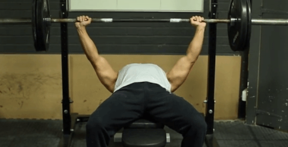
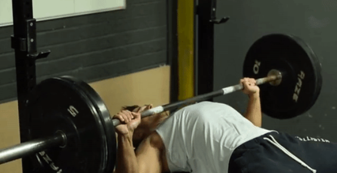
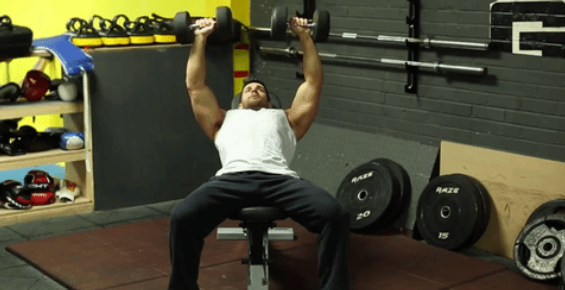
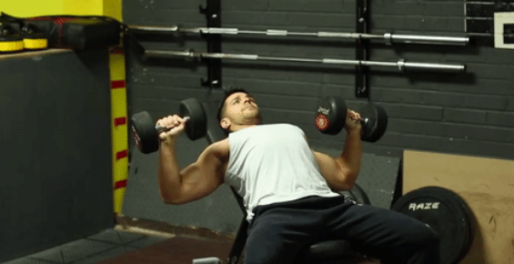
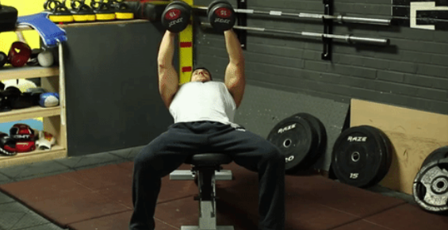
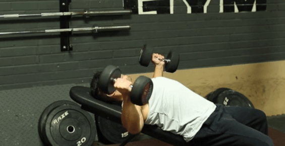

Supino reto
|  |  |
| Posição inicial do movimento. | Posição final do movimento. |
- Deitar no banco reto sobre as escápulas e com os pés bem assentes no chão.
- Baixar controladamente a barra até meio do peito.
- Elevar controladamente a barra até à extensão total dos cotovelos.
Supino inclinado com halteres
|  |  |
| Posição inicial do movimento. | Posição final do movimento. |
- Banco inclinado num ângulo de 30° - 45°.
- Deitar no banco sobre as escápulas e com os pés bem assentes no chão.
- Baixar controladamente os halteres até os cotovelos fazerem 90°.
- Elevar controlamente os halteres até à extensão total dos cotovelos.
Aberturas com halteres
|  |  |
| Posição inicial do movimento. | Posição final do movimento. |
- Banco inclinado num ângulo de 30° - 45°.
- Deitar no banco sobre as escápulas e com os pés bem assentes no chão.
- Halteres seguros com a palma da mão voltadas para dentro.
- Baixar controladamente os halteres, braços com os cotovelos levemente fletidos, até os cotovelos estarem alinhados com o tronco.
- Elevar controlamente os halteres até quase encostar um no outro.